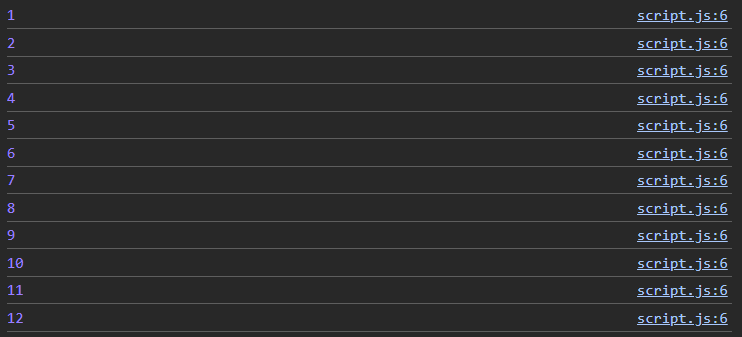
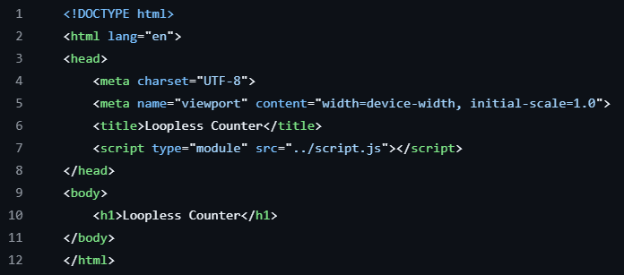
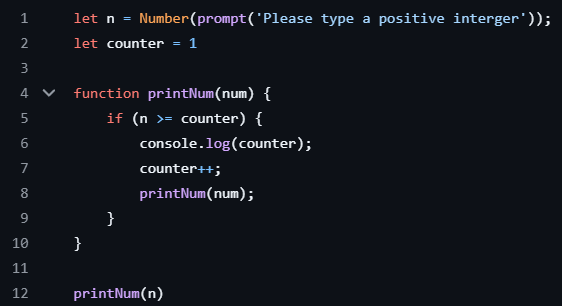
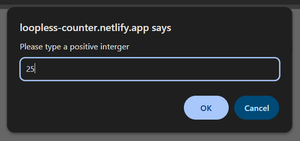

Loopless Counter
 Loopless Counter
Loopless Counter
Project Description:
Although using a loop would greatly simplify this task, this small function demonstrates that there is more than one way to skin a cat. It is very important to be able to problem solve in different ways, and have ideas that are uncommon to help innovate greatness.
Demonstrated Skills:
- Development Languages: HTML, JavaScript
- Tools: Visual Studio Code, GitHub
- Hosting: Netlify @ https://loopless-counter.netlify.app/
Concepts Learned:
- Loopless Loops: This task helped me learn that you don't need loops to create loops.

Challenges & Solutions:
- The Challenge: I had to create a function that counted up to a number imputed without using loops.
- The Solution: With the use of recursive functions, I was able to create a loop, without using actual loops, to make a simple counter.

Habits of Mind in Action:
- Persist: It took trial and error to create the final function, troubleshooting which aspects worked and what needed to be fixed.
- Connect: To help find solutions, I connected with classmates to see their ideas, and chose to either incorporate their ideas, or just some logic.
